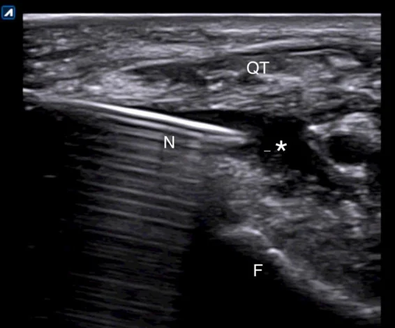

L'acido ialuronico è un componente naturale del liquido che lubrifica le articolazioni. Nell'artrosi quel liquido diventa più fluido e perde la sua capacità di ammortizzare: iniettarne di nuovo è ciò che si chiama viscosupplementazione.
Il beneficio su dolore e funzione è reale ma di entità moderata, e si costruisce nel giro di settimane. Non rigenera la cartilagine.

Per quali articolazioni
Ginocchio
È l'impiego principale e quello più studiato. Si propone nell'artrosi del ginocchio da lieve a moderata, quando esercizio, controllo del peso e farmaci per bocca non bastano. Rende di più nelle forme iniziali che in quelle avanzate.[1]
È anche un'opzione per chi non può ricevere cortisone — per esempio un diabete difficile da controllare — o per chi avrebbe bisogno di infiltrazioni ripetute nel tempo.
Anca
Qui il quadro è più incerto. Le ricerche condotte con il metodo più rigoroso non hanno dimostrato un vantaggio chiaro, mentre l’esperienza clinica e le osservazioni raccolte nel tempo sono più favorevoli: un gruppo europeo di specialisti ne sostiene l'uso nell'artrosi dell'anca da lieve a moderata in chi non deve essere operato, con alcune condizioni precise.[2]
Quelle condizioni sono pratiche e vale la pena conoscerle: una radiografia prima di decidere, l'esecuzione sempre sotto guida per immagini, una sola iniezione invece di un ciclo, e nessuna protesi d'anca nei tre mesi successivi. Non va usata durante una fase di riacutizzazione.
Quanto funziona
L'effetto su dolore e funzione è di entità moderata: un miglioramento percepibile, non una trasformazione.[1] Si distingue dal cortisone per il modo in cui arriva: più lentamente, ma tende a durare più a lungo.
Le formulazioni non sono tutte uguali. I preparati ad alto peso molecolare, quelli ibridi e quelli reticolati sembrano rendere di più, anche se il confronto diretto fra prodotti è reso difficile dalla disomogeneità degli studi.[1][2]
Va detto che le raccomandazioni internazionali non concordano su questo trattamento: alcune lo sconsigliano nel ginocchio, altre lo ammettono in casi selezionati.[1][3] È una divergenza reale, e il motivo per cui la decisione va presa caso per caso e non per protocollo.
Com'è la seduta
È un'infiltrazione come le altre. Nel ginocchio può essere eseguita sui punti di repere o con l'ecografo; nell'anca la guida per immagini è obbligatoria, perché l'articolazione è profonda.[2]
A seconda del prodotto il trattamento è una sola iniezione oppure un ciclo di tre-cinque, a distanza di una settimana. Dura pochi minuti e si torna a casa subito.
Dopo l'infiltrazione, fai
- Riprendi le attività normali già dallo stesso giorno.
- Prosegui con l'esercizio: è ciò che mantiene il risultato nel tempo.
- Dai tempo al trattamento: l'effetto si valuta dopo settimane, non dopo giorni.
- Segnala subito un ginocchio che diventa caldo, gonfio e molto dolente nelle 24-48 ore.
Non fare
- Non programmare sforzi intensi o lunghe camminate nelle 48 ore successive.
- Non aspettarti una ricostruzione della cartilagine: non è quello che accade.
- Non ripetere il ciclo prima di avere valutato il risultato del precedente.
Quando non si fa
- Infezione in corso, nell'articolazione o in generale.
- Lesioni o infezioni della pelle nel punto di ingresso.
- Allergia nota al preparato.
- Fase di riacutizzazione dell'artrosi, con articolazione calda e versamento.[2]
- Intervento di protesi già programmato entro tre mesi.[2]
Effetti indesiderati
È di norma ben tollerato. I disturbi più comuni sono locali e passeggeri: dolore o gonfiore nel punto di iniezione per un giorno o due. Gli effetti su tutto l'organismo sono rari, e il profilo di rischio è considerato più favorevole di quello degli antinfiammatori per bocca e del cortisone.[1]
Esiste una reazione rara che merita di essere conosciuta in anticipo: un'infiammazione locale intensa che compare poche ore dopo l'iniezione, con dolore, calore e gonfiore. Assomiglia a un'infezione dell'articolazione ma non lo è, si risolve da sola in qualche giorno e va comunque fatta vedere, perché solo un medico può distinguerla da un'infezione vera.[4]
Cosa è utile sapere prima
Non è una cura dell'artrosi. Agisce sui sintomi. Il controllo del peso, il movimento regolare e il rinforzo muscolare restano la base del trattamento, e nessuna iniezione li sostituisce.
Il prodotto conta. Peso molecolare, grado di reticolazione e schema di somministrazione cambiano il risultato atteso, e non tutti i preparati in commercio hanno alle spalle lo stesso numero di studi.[1][2]
In Europa la classificazione non è uniforme: alcuni preparati sono registrati come medicinali, altri come dispositivi medici. È la ragione per cui le regole di prescrizione e di rimborso cambiano da un paese all'altro.[1]
Da dove vengono queste informazioni
- Glinkowski WM, Tomaszewski W. Intra-articular hyaluronic acid for knee osteoarthritis: a systematic umbrella review. Journal of Clinical Medicine 2025;14(4):1272. doi:10.3390/jcm14041272
- Migliore A, Raman R, Diraçoglù D, et al. EUROVISCO recommendations for the use of viscosupplementation with hyaluronic acid in the management of hip osteoarthritis. Cartilage 2026;17(4):1419–1432. doi:10.1177/19476035251408602
- Bannuru RR, Osani MC, Vaysbrot EE, et al. OARSI guidelines for the non-surgical management of knee, hip, and polyarticular osteoarthritis. Osteoarthritis and Cartilage 2019;27(11):1578–1589. doi:10.1016/j.joca.2019.06.011
- Hynes JP, Kavanagh EC. Complications in image-guided musculoskeletal injections. Skeletal Radiology 2022;51(11):2097–2104. doi:10.1007/s00256-022-04076-8
Scheda aggiornata il 16 novembre 2026. Prossima revisione prevista entro novembre 2028.
Per quali disturbi
Le schede dei disturbi per cui questo trattamento viene preso in considerazione, con quello che dicono le linee guida.
Cerca un'altra scheda
Un disturbo, un trattamento, o anche solo il punto che fa male: «formicolio», «tallone», «spalla congelata».